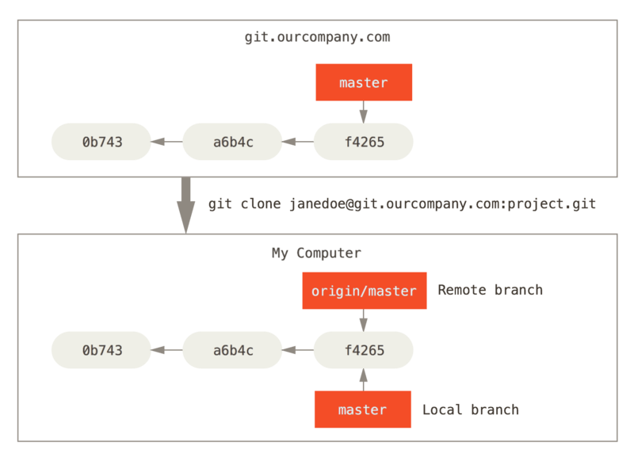
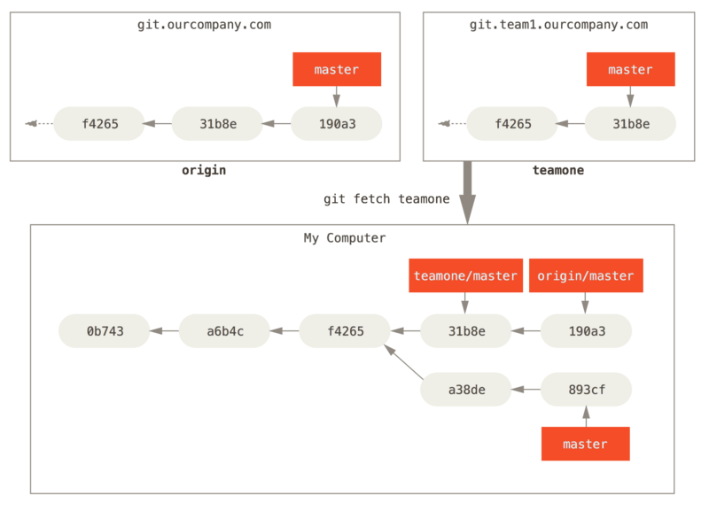

远程分支
Contents
远程分支#
远程跟踪分支#
Note
远程跟踪分支是远程分支状态的引用，它是你无法移动的本地引用。一旦你进行了网络通信（fetch），Git 就会为你移动它们以精确反映远程仓库的状态。它们以 <remote>/<branch> 的形式命名。例如，如果你想要看最后一次与远程仓库 origin 通信时 master 分支的状态，你可以查看 origin/master 分支。
这可能有点难以理解，让我们来看一个例子。假设你的网络里有一个在 git.ourcompany.com 的 Git 服务器。如果从这里克隆，Git 的 clone 命令会为你自动将其命名为 origin，拉取它所有的数据，创建一个指向 master 分支的指针，并且在本地将其命名为 origin/master。Git 也会给你一个与 origin/master 指向同一个地方的本地 master 分支，这样你就有工作的基础。

如果你在本地 master 分支做了一些工作，在同一段时间内有其他人推送到 git.ourcompany.com 并且更新了它的 master 分支，这就是说你们的提交历史已走向不同的方向。即便这样，只要你保持不与 origin 服务器连接（fetch），你的 origin/master 指针就不会移动。

如果要与给定的远程仓库同步数据，运行 git fetch <remote> 命令（在本例中为 git fetch origin）。这个命令查找 origin 是哪一个服务器，从中抓取本地没有的数据，并且更新本地数据库，移动 origin/master 指针到更新之后的位置。

为了演示有多个远程仓库与远程分支的情况，我们假设你有另一个 Git 服务器，仅服务于你的某个敏捷开发团队。这个服务器位于 git.team1.ourcompany.com。你可以运行 git remote add 命令添加一个新的远程仓库引用到当前的项目。将这个远程仓库命名为 teamone，将其作为完整 URL 的缩写。

现在，可以运行 git fetch teamone 来抓取远程仓库 teamone 有而本地没有的数据。因为那台服务器上现有的数据是 origin 服务器上的一个子集，所以 Git 并不会抓取数据而是会设置远程跟踪分支 teamone/master 指向 teamone 的 master 分支。

推送#
当你想要公开分享一个分支时，需要将其推送到有写入权限的远程仓库上。本地的分支并不会自动与远程仓库同步 - 你必须显式地推送想要分享的分支。
如果希望和别人一起在名为 serverfix 的分支上工作，运行 git push <remote> <branch>：
$ git push origin serverfix
Counting objects: 24, done.
Delta compression using up to 8 threads.
Compressing objects: 100% (15/15), done.
Writing objects: 100% (24/24), 1.91 KiB | 0 bytes/s, done.
Total 24 (delta 2), reused 0 (delta 0)
To https://github.com/schacon/simplegit
* [new branch] serverfix -> serverfix
你也可以运行 git push origin serverfix:serverfix，它会做同样的事。当然也可以通过这种格式来推送本地分支到一个命名不相同的远程分支，比如说运行 git push origin serverfix:awesomebranch 会将本地的 serverfix 分支推送到远程仓库的 awesomebranch 分支。
下一次其他协作者从服务器上抓取数据时，他们会在本地生成一个远程分支 origin/serverfix，指向服务器的 serverfix 分支：
$ git fetch origin
remote: Counting objects: 7, done.
remote: Compressing objects: 100% (2/2), done.
remote: Total 3 (delta 0), reused 3 (delta 0)
Unpacking objects: 100% (3/3), done.
From https://github.com/schacon/simplegit
* [new branch] serverfix -> origin/serverfix
要特别注意的一点是当抓取到新的远程跟踪分支时，本地并不会形成可编辑的副本。换一句话说，这种情况下，不会有一个新的 serverfix 分支 - 只有一个不可修改的 origin/serverfix 指针。
可以运行 git merge origin/serverfix 将这些工作合并到当前所在的分支。如果想在自己的 serverfix 分支上工作，可以将其建立在远程跟踪分支之上：
$ git checkout -b serverfix origin/serverfix
Branch serverfix set up to track remote branch serverfix from origin.
Switched to a new branch 'serverfix'
这会给你一个用于工作的本地分支，并且起点位于 origin/serverfix。
跟踪分支#
从一个远程分支检出（checkout）一个本地分支会自动创建所谓的“跟踪分支”。跟踪分支是与远程分支有直接关系的本地分支。如果在一个跟踪分支上输入 git pull，Git 能自动识别去哪个服务器上抓取、合并到哪个分支。
当克隆一个仓库时，通常会自动创建一个跟踪 origin/master 的 master 分支。然而，如果你愿意的话可以设置其他的跟踪分支，命令为 git checkout -b <branch> <remote>/<branch>，这是一个十分常见的操作所以 Git 提供了 –track 快捷方式：
$ git checkout --track origin/serverfix
Branch serverfix set up to track remote branch serverfix from origin.
Switched to a new branch 'serverfix'
如果想要将本地分支与远程分支设置为不同的名字：
$ git checkout -b sf origin/serverfix
Branch sf set up to track remote branch serverfix from origin.
Switched to a new branch 'sf'
现在，本地分支 sf 会自动从 origin/serverfix 拉取。
设置已有的本地分支跟踪一个刚刚拉取下来的远程分支，或者想要修改跟踪的上游分支，可以使用 -u 或者 –set-upstream-to 选项：
$ git branch -u origin/serverfix
Branch serverfix set up to track remote branch serverfix from origin.
如果想要查看设置的所有跟踪分支，可以使用 git branch -vv ，它还会列出远程分支与本地分支是否是领先、落后或者都是：
$ git branch -vv
iss53 7e424c3 [origin/iss53: ahead 2] forgot the brackets
master 1ae2a45 [origin/master] deploying index fix
* serverfix f8674d9 [teamone/server-fix-good: ahead 3, behind 1] this should do it
testing 5ea463a trying something new
这里可以看到 iss53 分支正在跟踪 origin/iss53 并且“ahead”是 2，意味着本地还有两个提交没有被推送到服务器上。接下来可以看到 serverfix 分支正在跟踪 teamone 服务器上的 server-fix-good 分支并且领先 3 落后 1，意味着服务器上有一次提交没合并入同时本地有三次提交还没推送。最后看到 testing 分支并没有跟踪任何远程分支。
Caution
需要注意的是这些数字的值来自于你从每个服务器上最后一次抓取（fetch）的数据，这个命令并没有连接服务器，它只会告诉你关于本地缓存的服务器数据。
拉取#
当 git fetch 从服务器上抓取本地没有的数据时，它并不会修改工作目录中的内容。它只会获取数据然后让你自己合并。然而，有一个 git pull 命令在大多数情况下等同于 git fetch 紧接着一个 git merge。如果有一个像之前章节演示的设置好的跟踪分支，git pull 都会查找当前分支的服务器与分支，从服务器上抓取数据后尝试合并入那个远程分支。
Tip
由于 git pull 的魔法经常令人困惑所以通常单独显式地使用 fetch 和 merge 命令会更好一些。
删除远程分支#
你可以运行带有 –delete 选项的 git push 命令来删除一个远程分支：
$ git push origin --delete serverfix
To https://github.com/schacon/simplegit
- [deleted] serverfix
基本上这个命令做的只是从服务器上移除这个指针。